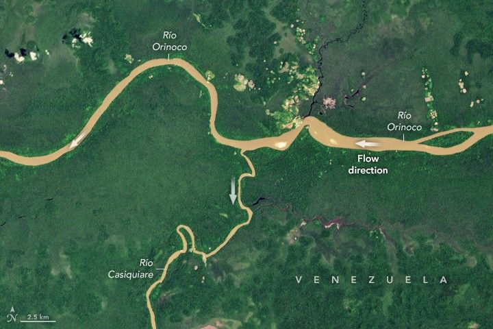

When Rivers Take a Weird Turn
Some rules of hydrology are made to be broken. Two such infractions occur at junctions along rivers in Venezuela and Suriname, where the water flows in unexpected ways.
In Venezuela’s Amazonas state, the Río Casiquiare splits from the Río Orinoco as it flows gently through dense forest. Many rivers branch, or bifurcate, along their routes, and the branches almost always rejoin the main river channel. Not so with the Casiquiare. After veering south, it continues to meander for hundreds of kilometers until joining the Rio Negro and ultimately the Amazon River in Brazil. What appears to be a convergence is actually a divergence of flow. Some scientists think the split developed due to a combination of low topographic relief and high flow volume during floods. The Casiquiare is both a distributary of the Orinoco and a tributary of the Amazon, forming a natural, navigable connection between the two largest watersheds in South America. It diverts a significant portion of the Orinoco’s flow and challenges standard watershed rules by sending water from one basin into another. :contentReference[oaicite:0]{index=0}
Three branches of dark, narrow rivers form a Y‑like shape as they wind through green forest in a satellite image of Suriname. The Wayambo River (also called Wayombo) in Suriname exhibits a similar but slightly different flavor of unexpected behavior. The Boven Wayambo (loosely translated as “upper Wayambo”) splits and becomes the Wayombo—a river that runs over flat terrain and can flow either westward toward the Nickerie River or eastward toward the Coppename River, depending on conditions. A lock near the Nickerie junction helps draw water westward to support rice cultivation, but in other circumstances the river may flow east, heading toward a different outlet to the Atlantic Ocean. :contentReference[oaicite:1]{index=1}
Researchers note that these unusual waterways “defy the rules” of typical hydrology because they distribute water between basins in ways that don’t follow classic watershed delineation. Missions like SWOT (Surface Water and Ocean Topography), led by NASA and CNES (Centre National d’Études Spatiales), are improving measurements of water heights and flow patterns around the globe, helping scientists better understand complex systems like the Casiquiare and Wayambo. :contentReference[oaicite:2]{index=2}